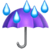
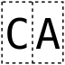
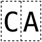
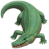
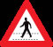
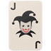
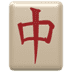
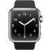
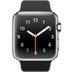
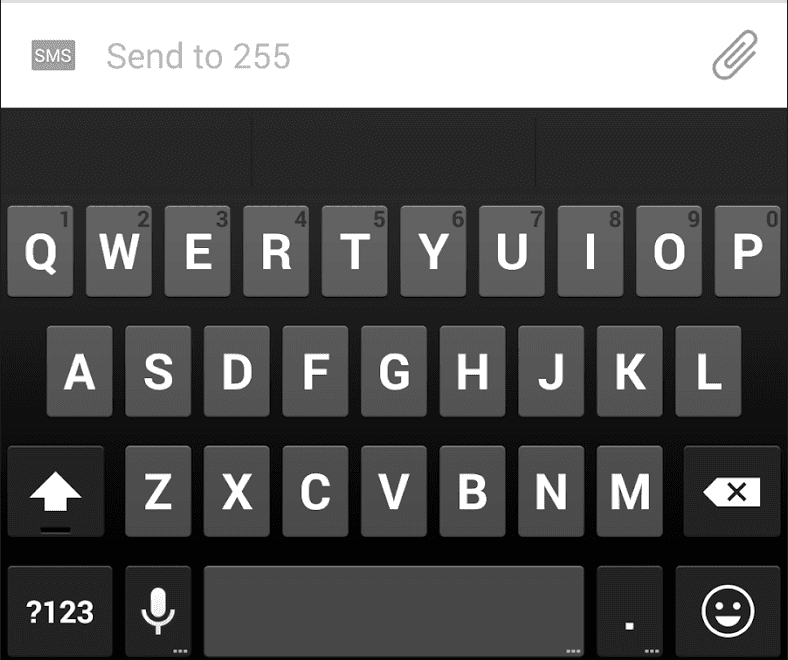

| |
| Version | 1.0 (draft 10) |
| Editors | Mark Davis (Google Inc.), Peter Edberg (Apple Inc.) |
| Date | 2015-05-08 |
| This Version | http://www.unicode.org/reports/tr51/tr51-2.html |
| Previous Version | http://www.unicode.org/reports/tr51/tr51-1-archive.html |
| Latest Version | http://www.unicode.org/reports/tr51 |
| Latest Proposed Update | n/a |
| Revision | 2 |
This document aims to improve the interoperability of emoji characters across implementations by providing guidelines and data.
This is a draft document which may be updated, replaced, or superseded by other documents at any time. Publication does not imply endorsement by the Unicode Consortium. This is not a stable document; it is inappropriate to cite this document as other than a work in progress.
Please submit corrigenda and other comments with the online reporting form [Feedback]. Related information that is useful in understanding this document is found in the References. For the latest version of the Unicode Standard see [Unicode]. For a list of current Unicode Technical Reports see [Reports]. For more information about versions of the Unicode Standard, see [Versions].
Emoji are pictographs (pictorial symbols) that are typically presented in a colorful cartoon form and used inline in text. They represent things such as faces, weather, vehicles and buildings, food and drink, animals and plants, or icons that represent emotions, feelings, or activities.
The word emoji comes from the Japanese:
絵 (e ≅ picture) 文 (mo ≅ writing) 字 (ji ≅ character).
Emoji on smartphones and in chat and email applications have become extremely popular worldwide. As of 2015, for example, Instagram reported that “in March of this year, nearly half of text [on Instagram] contained emoji.” Individual emoji also vary greatly in popularity (and even by country), as described in the SwiftKey Emoji Report. See emoji press page for details about this.
Especially in social media and short text, emoji provide flavor and emphasis to messages. They help to compensate for the lack of gestures and intonation in text.
Emoji may be represented internally as graphics or they may be represented by normal glyphs encoded in fonts like other characters. These latter are called emoji characters for clarity. Some Unicode characters are normally displayed as emoji; some are normally displayed as ordinary text, and some can be displayed both ways. See also the OED: emoji, n.
There’s been considerable media attention to emoji since they appeared in the Unicode Standard, with increased attention starting in late 2013. For example, there were some 6,000 articles on the emoji appearing in Unicode 7.0, according to Google News. See the emoji press page for many samples of such articles, and also the Keynote from the 38th Internationalization & Unicode Conference.
Emoji became available in 1999 on Japanese mobile phones. There was an early proposal in 2000 to encode DoCoMo emoji in Unicode. At that time, it was unclear whether these characters would come into widespread use—and there wasn't support from the Japanese mobile phone carriers to add them to Unicode—so no action was taken.
The emoji turned out to be quite popular in Japan, but each mobile phone carrier developed different (but partially overlapping) sets, and each mobile phone vendor used their own text encoding extensions, which were incompatible with one another. The vendors developed cross-mapping tables to allow limited interchange of emoji characters with phones from other vendors, including email. Characters from other platforms that could not be displayed were represented with 〓 (U+3013 GETA MARK), but it was all too easy for the characters to get corrupted or dropped.
When non-Japanese email and mobile phone vendors started to support email exchange with the Japanese carriers, they ran into those problems. Moreover, there was no way to represent these characters in Unicode, which was the basis for text in all modern programs. In 2006, Google started work on converting Japanese emoji to Unicode private-use codes, leading to the development of internal mapping tables for supporting the carrier emoji via Unicode characters in 2007.
There are, however, many problems with a private-use approach, and thus a proposal was made to the Unicode Consortium to expand the scope of symbols to encompass emoji. This proposal was approved in May 2007, leading to the formation of a symbols subcommittee, and in August 2007 the technical committee agreed to support the encoding of emoji in Unicode based on a set of principles developed by the subcommittee. The following are a few of the documents tracking the progression of Unicode emoji characters.
| Date | Doc No. | Title | Authors |
|---|---|---|---|
| 2000-04-26 | L2/00-152 | NTT DoCoMo Pictographs | Graham Asher (Symbian) |
| 2006-11-01 | L2/06-369 | Symbols (scope extension) | Mark Davis (Google) |
| 2007-08-03 | L2/07-257 | Working Draft Proposal for Encoding Emoji Symbols | Kat Momoi, Mark Davis, Markus Scherer (Google) |
| 2007-08-09 | L2/07-274R | Symbols draft resolution | Mark Davis (Google) |
| 2007-09-18 | L2/07-391 | Japanese TV Symbols (ARIB) | Michel Suignard (Microsoft) |
| 2009-01-30 | L2/09-026 | Emoji Symbols Proposed for New Encoding | Markus Scherer, Mark Davis, Kat Momoi, Darick
Tong (Google); Yasuo Kida, Peter Edberg (Apple) |
| 2009-03-05 | L2/09-025R2 | Proposal for Encoding Emoji Symbols | |
| 2010-04-27 | L2/10-132 | Emoji Symbols: Background Data | |
| 2011-02-15 | L2/11-052R | Wingdings and Webdings Symbols | Michel Suignard |
In 2009, the first Unicode characters explicitly intended as emoji were added to Unicode 5.2 for interoperability with the ARIB (Association of Radio Industries and Businesses) set. A set of 722 characters was defined as the union of emoji characters used by Japanese mobile phone carriers: 114 of these characters were already in Unicode 5.2. In 2010, the remaining 608 emoji characters were added to Unicode 6.0, along with some other emoji characters. In 2012, a few more emoji were added to Unicode 6.1, and in 2014 a larger number were added to Unicode 7.0.
Here is a summary of when some of the major sources of pictographs used as emoji were encoded in Unicode. These sources include other characters in addition to emoji.
| Source | Abbr |
L |
Dev. Starts |
Released |
Unicode Version |
Sample Character |
|||
|---|---|---|---|---|---|---|---|---|---|
B&W |
Color
|
Code |
Name | ||||||
| Zapf Dingbats | ZDings |
z |
1991-10
|
U+270F |
pencil | ||||
| ARIB | ARIB |
a |
2007 |
2008-10-01
|

|
U+2614 |
umbrella with rain drops | ||
| Japanese carriers | JCarrier |
j |
2007 |
2010-10-11
|
U+1F60E |
smiling face with sunglasses | |||
| Wingdings & Webdings | WDings |
w |
2010 |
2014-06-16
|
U+1F336 |
hot pepper | |||
Unicode characters can correspond to multiple sources. The L column contains single-letter abbreviations for use in charts and data files. Characters that do not correspond to any of these sources can be marked with Other (x).
For a detailed view of when various source sets of emoji were added to Unicode, see emoji-versions-sources (the format is explained in Data Files). The UCD data file EmojiSources.txt shows the correspondence to the original Japanese carrier symbols.
The Selected Products table lists when Unicode emoji characters were incorporated into selected products. (The Private Use characters (PUA) were a temporary solution.)
| Date | Product | Version | Encoding | Display | Input | Notes, Links |
|---|---|---|---|---|---|---|
| 2008-01 | GMail mobile | PUA | color | palette | モバイル Gmail が携帯絵文字に対応しました | |
| 2008-10 | GMail web | PUA | color | palette | Gmail で絵文字が使えるようになりました | |
| 2008-11 | iPhone | iPhone OS 2.2 | PUA | color | palette | Softbank users, others via 3rd party apps. CNET Japan article on Nov. 21, 2008. |
| 2011-07 | Mac | OSX 10.7 | Unicode 6.0 | color | Character Viewer | |
| 2011-11 | iPhone, iPad | iOS 5 | Unicode 6.0 | color | +emoji keyboard | |
| 2012-06 | Android | Jelly Bean | B&W | 3rd party input | …Quick List of Jelly Bean Emoji… | |
| 2012-09 | iPhone, iPad | iOS 6 | + variation selectors | |||
| 2012-08 | Windows | 8 | Unicode only; no emoji variation sequences | desktop/tablet: b&w; phone: color |
integrated in touch keyboards | |
| 2013-08 | Windows | 8.1 | Unicode only; emoji variation sequences | all: color | touch keyboards; phone: text prediction features (e.g. “love” -> ❤) | Color using scalable glyphs (OpenType extension) |
| 2013-11 | Android | Kitkat | color | native keyboard | …new, colorful Emoji in Android KitKat |
People often ask how many emoji are in the Unicode Standard. This question does not have a simple answer, because there is no clear line separating which pictographic characters should be displayed with a typical emoji style. For a complete picture, see Which Characters are Emoji.
The colored images used in this document and associated charts are for illustration only. They do not appear in the Unicode Standard, which has only black and white images. They are either made available by the respective vendors for use in this document, or are believed to be available for non-commercial reuse. Inquiries for permission to use vendor images should be directed to those vendors, not to the Unicode Consortium. For more information, see Rights to Emoji Images.
The term emoticon refers to a series of text characters (typically punctuation or symbols) that is meant to represent a facial expression or gesture (sometimes when viewed sideways), such as the following.
;-)
Emoticons predate Unicode and emoji, but were later adapted to include Unicode characters. The following examples use not only ASCII characters, but also U+203F ( ‿ ), U+FE35 ( ︵ ), U+25C9 ( ◉ ), and U+0CA0 ( ಠ ).
^‿^
◉︵◉
ಠ_ಠ
Often implementations allow emoticons to be used to input emoji. For
example, the emoticon ;-) can be mapped to  in a
chat window. The term emoticon is sometimes used in a
broader sense, to also include the emoji for facial expressions and
gestures. That broad sense is used in the Unicode block name Emoticons,
covering the code points from U+1F600 to U+1F64F.
in a
chat window. The term emoticon is sometimes used in a
broader sense, to also include the emoji for facial expressions and
gestures. That broad sense is used in the Unicode block name Emoticons,
covering the code points from U+1F600 to U+1F64F.
Unicode is the foundation for text in all modern software: it’s how
all mobile phones, desktops, and other computers represent the text
of every language. People are using Unicode every time they type a
key on their phone or desktop computer, and every time they look at a
web page or text in an application. It is very important that the
standard be stable, and that every character that goes into it be
scrutinized carefully. This requires a formal process
with a long development cycle. For example, the  dark
sunglasses character was first proposed years before it was released
in Unicode 7.0.
dark
sunglasses character was first proposed years before it was released
in Unicode 7.0.
Characters considered for encoding must normally be in widespread use
as elements of text. The emoji and various symbols were added to
Unicode because of their use as characters for text-messaging in a
number of Japanese manufacturers’ corporate standards, and other
places, or in long-standing use in widely distributed fonts such as
Wingdings and Webdings. In many cases, the characters were added for
complete round-tripping to and from a source set, not
because they were inherently of more importance than other
characters. For example, the  clamshell
phone character was included because it was in Wingdings and
Webdings, not because it is more important than, say, a “skunk”
character.
clamshell
phone character was included because it was in Wingdings and
Webdings, not because it is more important than, say, a “skunk”
character.
In some cases, a character was added to complete a set: for example,
a  rugby football
character was added to Unicode 6.0 to complement the
rugby football
character was added to Unicode 6.0 to complement the  american
football character (the
american
football character (the  soccer ball had
been added back in Unicode 5.2). Similarly, a mechanism was added
that could be used to represent all country flags (those
corresponding to a two-letter unicode_region_subtag),
such as the  flag for Canada,
even though the Japanese carrier set only had 10 country flags.
soccer ball had
been added back in Unicode 5.2). Similarly, a mechanism was added
that could be used to represent all country flags (those
corresponding to a two-letter unicode_region_subtag),
such as the  flag for Canada,
even though the Japanese carrier set only had 10 country flags.
This document describes a new set of selection factors used to weigh the encoding of prospective candidates, in Annex C: Selection Factors.
That annex also points to instructions on submitting character encoding proposals. People wanting to submit emoji for consideration for encoding should see that annex. It may be helpful to review the Unicode Mail List as well.
For a list of frequently asked questions on emoji, see the Unicode Emoji FAQ.
This document provides:
It also provides background information about emoji, and discusses longer-term approaches to emoji.
As new Unicode characters are added or the “common practice” for emoji usage changes, the data and recommendations supplied by this document may change in accordance. Thus the recommendations and data will change across versions of this document.
Additions beyond Unicode 7.0 are being addressed by the Unicode Technical Committee: as any new characters are approved, this document will be updated as appropriate.
The following provide more formal definitions of some of the terms used in this document. Readers who are more interested in other features of the document may choose to continue from Section 2 Design Guidelines .
ED-1. emoji — A colorful pictograph that can be used inline in text. Internally the representation is either (a) an image or (b) an encoded character. The term emoji character can be used for (b) where not clear from context.
ED-2. emoticon — (1) A series of text characters (typically punctuation or symbols) that is meant to represent a facial expression or gesture such as ;-) (2) a broader sense, also including emoji for facial expressions and gestures.
ED-3. emoji character — A character that is recommended for use as emoji.
- These are the characters listed in [emoji-data].
ED-4. level 1 emoji character — An emoji character that is among those most commonly supported as emoji by vendors at present.
- These characters have an [emoji-data] Field 2 value of “L1”.
ED-5. level 2 emoji character — An emoji character that is not a level 1 emoji character.
- These characters have an [emoji-data] Field 2 value of “L2”.
For more details about level 1 and level 2 emoji, see Section 3 Which Characters are Emoji .
ED-6. default emoji presentation character — A character that, by default, should appear with an emoji presentation, rather than a text presentation.
- These characters have an [emoji-data] Field 1 value of “emoji”.
ED-7. default text presentation character — A character that, by default, should appear with a text presentation, rather than an emoji presentation.
- These characters have an [emoji-data] Field 1 value of “text”.
For more details about emoji and text presentation, see 2 Design Guidelines and Section 4 Presentation Style .
ED8. emoji variation selector — One of the two variation selectors used to request a text or emoji presentation for an emoji character:
- U+FE0E for a text presentation
- U+FE0F for an emoji presentation
ED-9. emoji variation sequence — A variation sequence listed in StandardizedVariants.html that contains an emoji variation selector.
ED-10. emoji base variation sequence — An emoji variation sequence that starts with an emoji modifier base.
ED-11. emoji modifier — A character that can be used to modify the appearance of a preceding emoji in an emoji modifier sequence.
- These characters have an [emoji-data] Field 3 value of “modifier”.
ED12. emoji modifier base — A character whose appearance can be modified by a subsequent emoji modifier in an emoji modifier sequence.
- These characters have an [emoji-data] Field 3 value of either “primary” or “secondary”.
ED-13. emoji modifier sequence — A sequence of the following form:
(emoji_modifier_base | emoji_base_variation_sequence) emoji_modifier
For more details about emoji modifiers, see Section 2.2 Diversity.
Unicode characters can have many different presentations as text. An "a" for example, can look quite different depending on the font. Emoji characters can have two main kinds of presentation:
More precisely, a text presentation is a simple foreground shape whose color which is determined by other information, such as setting a color on the text, while an emoji presentation determines the color(s) of the character, and is typically multicolored. In other words, when someone changes the text color in a word processor, a character with an emoji presentation will not change color.
Any Unicode character can be presented with a text presentation, as in the Unicode charts. For the emoji presentation, both the name and the representative glyph in the Unicode chart should be taken into account when designing the appearance of the emoji, along with the images used by other vendors. The shape of the character can vary significantly. For example, here are just some of the possible images for U+1F36D LOLLIPOP, U+1F36E CUSTARD, U+1F36F HONEY POT, and U+1F370 SHORTCAKE:

While the shape of the character can vary significantly, designers
should maintain the same “core” shape, based on the shapes used
mostly commonly in industry practice. For example, a U+1F36F HONEY
POT encodes for a pictorial representation of a pot of honey, not for
some semantic like "sweet". It would be unexpected to
represent U+1F36F HONEY POT as a sugar cube, for example. Deviating
too far from that core shape can cause interoperability problems: see
accidentally-sending-friends-a-hairy-heart-emoji.
Direction (whether a person or object faces to the right or left, up
or down) should also be maintained where possible, because a change
in direction can change the meaning: when sending  
 “crocodile shot by
police”, people expect any recipient to see the pistol pointing in
the same direction as when they composed it. Similarly, the U+1F6B6 pedestrian
should face to the left
“crocodile shot by
police”, people expect any recipient to see the pistol pointing in
the same direction as when they composed it. Similarly, the U+1F6B6 pedestrian
should face to the left  , not to the right.
, not to the right.
General-purpose emoji for people and body parts should also not be
given overly specific images: the general recommendation is to be as
neutral as possible regarding race, ethnicity, and gender. Thus for
the character U+1F64B happy person raising one hand, the
recommendation is to use a neutral graphic like instead of an overly-specific image like  . This includes the characters listed in the
annotations chart under “human”.
The representative glyph used in the charts, or images from other
vendors may be misleading: for example, the construction worker
. This includes the characters listed in the
annotations chart under “human”.
The representative glyph used in the charts, or images from other
vendors may be misleading: for example, the construction worker  may be male or female.
For more information, see the Unicode Emoji
FAQ.
may be male or female.
For more information, see the Unicode Emoji
FAQ.
Names of symbols such as BLACK MEDIUM SQUARE or WHITE MEDIUM SQUARE are not meant to indicate that the corresponding character must be presented in black or white, respectively; rather, the use of “black” and “white” in the names is generally just to contrast filled versus outline shapes, or a darker color fill versus a lighter color fill. Similarly, in other symbols such as the hands U+261A BLACK LEFT POINTING INDEX and U+261C WHITE LEFT POINTING INDEX, the words “white” and “black” also refer to outlined versus filled, and do not indicate skin color.
However, other color words in the name, such as YELLOW, typically provide a recommendation as to the emoji presentation, which should be followed to avoid interoperability problems.
Emoji characters may not always be displayed on a white background. They are often best given a faint, narrow contrasting border to keep the character visually distinct from a similarly colored background. Thus a Japanese flag would have a border so that it would be visible on a white background, and a Swiss flag have a border so that it is visible on a red background.
Current practice is for emoji to have a square aspect ratio, deriving from their origin in Japanese. For interoperability, it is recommended that this practice be continued with current and future emoji.
Flag emoji characters are discussed in Annex B: Flags.
Combining marks may be applied to emoji, just like they can be
applied to other characters. When that is done, the combination
should take on an emoji presentation. For example, a  is represented as the sequence "1" plus an emoji variation
selector plus U+20E3 COMBINING ENCLOSING KEYCAP. Systems are
unlikely, however, to support arbitrary combining marks with
arbitrary emoji. Aside from U+20E3, the following can be used:
is represented as the sequence "1" plus an emoji variation
selector plus U+20E3 COMBINING ENCLOSING KEYCAP. Systems are
unlikely, however, to support arbitrary combining marks with
arbitrary emoji. Aside from U+20E3, the following can be used:
For example,  (pedestrian
crossing ahead) can be represented as  + U+20E4, and
+ U+20E4, and  (no bicycles allowed) can be represented as
(no bicycles allowed) can be represented as  + U+20E0.
+ U+20E0.
The following emoji have explicit gender, based on the name and explicit, intentional contrasts with other characters.
U+1F466 boy
U+1F467 girl
U+1F468 man
U+1F469 woman
U+1F474 older man
U+1F475 older woman
U+1F46B man and woman holding hands
U+1F46C two men holding
hands
U+1F46D two women holding hands
U+1F6B9 mens
symbol
U+1F6BA womens symbol
U+1F478 princess
U+1F46F woman with bunny ears
U+1F470 bride with veil
U+1F472 man with gua pi mao
U+1F473 man with turban
U+1F574 man in business suit
levitating
U+1F385 father christmas
All others should be depicted in a gender-neutral way.
People all over the world want to have emoji that reflect more human diversity, especially for skin tone. The Unicode emoji characters for people and body parts are meant to be generic, yet following the precedents set by the original Japanese carrier images, they are often shown with a light skin tone instead of a more generic (nonhuman) appearance, such as a yellow/orange color or a silhouette.
Five symbol modifier characters that provide for a range of skin tones for human emoji are planned for Unicode Version 8.0 (scheduled for mid-2015). These characters are based on the six tones of the Fitzpatrick scale, a recognized standard for dermatology (there are many examples of this scale online, such as FitzpatrickSkinType.pdf). The exact shades may vary between implementations.
| Code | Name | Samples | |
|---|---|---|---|
| U+1F3FB | EMOJI MODIFIER FITZPATRICK TYPE-1-2 | ||
| U+1F3FC | EMOJI MODIFIER FITZPATRICK TYPE-3 | ||
| U+1F3FD | EMOJI MODIFIER FITZPATRICK TYPE-4 | ||
| U+1F3FE | EMOJI MODIFIER FITZPATRICK TYPE-5 | ||
| U+1F3FF | EMOJI MODIFIER FITZPATRICK TYPE-6 | ||
These characters have been designed so that even where diverse color images for human emoji are not available, readers can see what the intended meaning was.
The default representation of these modifier characters when used alone is as a color swatch. Whenever one of these characters immediately follows certain characters (such as WOMAN), then a font should show the sequence as a single glyph corresponding to the image for the person(s) or body part with the specified skin tone, such as the following:
+  →
→ 
However, even if the font doesn’t show the combined character, the user can still see that a skin tone was intended:

This may fall back to a black and white stippled or hatched image such as when colorful emoji are not supported.
 + 
+  →
→ 
When a human emoji is not immediately followed by a emoji modifier character, it should use a generic, non-realistic skin tone, such as:
RGB #FFCC22 (one of the
colors typically used for the smiley faces)RGB #3399CCRGB #CCCCCCFor example, the following set uses gray as the generic skin tone:

As to hair color, dark hair tends to be more neutral, because people of every skin tone can have black (or very dark brown) hair—however, there is no requirement for any particular hair color. One exception is PERSON WITH BLOND HAIR, which needs to have blond hair regardless of skin tone.
To have an effect on an emoji, an emoji modifier must immediately follow that emoji. There is only one exception: there may be an emoji variation selector between them. The emoji modifier automatically implies the emoji presentation style, so the variation selector is not needed. However, if the emoji modifier is present it must come immediately after the modified emoji character, such as in:
<U+270C VICTORY HAND, FE0F, TYPE-3>
Any other intervening character causes the emoji modifier to appear as a free-standing character. Thus
+ +  →
→ 
Emoji for multi-person groupings present some special challenges:
The basic solution for each of these cases is to represent the multi-person grouping as a sequence of characters—a separate character for each person intended to be part of the grouping, along with characters for any other symbols that are part of the grouping. Each person in the grouping could optionally be followed by an emoji modifier. For example, conveying the notion of COUPLE WITH HEART for a couple involving two women can use a sequence with WOMAN followed by an emoji-style HEAVY BLACK HEART followed by another WOMAN character; each of the WOMAN characters could have an emoji modifier if desired. This makes use of conventions already found in current emoji usage, in which certain sequences of characters are intended to be read as a single unit. For example:

Some implementations may provide single glyphs that correspond to several such sequences, and may provide a palette or keyboard that generates the appropriate sequences for the glyphs shown. In that case U+200D ZERO WIDTH JOINER (ZWJ) can be used in the sequences as an indication that a single glyph (a ligature) should be used if available. If such a sequence is sent to a system that does not have a corresponding single glyph, the ZWJ characters would be ignored and a sequence of separate images would be displayed. Thus the ZWJ mechanism should only be used where the sequence of separate images would make sense to a recipient using an implementation that didn't support the combined glyph.
For example, the following are possible displays:
| Sequence | Display | Combined glyph? |
|---|---|---|
Yes |
||
No |
See also Annex E: Existing Use of ZWJ Sequences.
In a sequence of characters connected using ZWJ, it is recommended that the entire sequence have an emoji presentation if any character in the sequence has explicit or default emoji presentation.
Implementations can present the emoji modifiers as separate characters in an input palette, or present the combined characters using mechanisms such as long press.
The emoji modifiers are not intended for combination with arbitrary emoji characters. Instead, they are restricted to the following characters, in two separate sets. Of these characters, it is strongly recommended that the Primary set for combination be supported. No characters outside of these two sets are to be combined with emoji modifiers. These sets may change over time, with successive versions of this document. The Images are in the recommended sort order, while the Code points and names are in code point order.
| Type | Images | Code points and names |
|---|---|---|
| Primary Set (26 code points) |
|
U+1F385 FATHER CHRISTMAS U+1F466 BOY …U+1F469 WOMAN U+1F46E POLICE OFFICER U+1F470 BRIDE WITH VEIL …U+1F478 PRINCESS U+1F47C BABY ANGEL U+1F481 INFORMATION DESK PERSON …U+1F482 GUARDSMAN U+1F486 FACE MASSAGE …U+1F487 HAIRCUT U+1F645 FACE WITH NO GOOD GESTURE …U+1F647 PERSON BOWING DEEPLY U+1F64B HAPPY PERSON RAISING ONE HAND U+1F64D PERSON FROWNING …U+1F64E PERSON WITH POUTING FACE |
| Secondary Set (107 code points) |
|
U+261D WHITE UP POINTING INDEX U+2639 WHITE FROWNING FACE …U+263A WHITE SMILING FACE U+270A RAISED FIST …U+270D WRITING HAND U+1F3C2 SNOWBOARDER …U+1F3C4 SURFER U+1F3C7 HORSE RACING U+1F3CA SWIMMER U+1F442 EAR …U+1F443 NOSE U+1F446 WHITE UP POINTING BACKHAND INDEX …U+1F450 OPEN HANDS SIGN U+1F47F IMP U+1F483 DANCER U+1F485 NAIL POLISH U+1F4AA FLEXED BICEPS U+1F590 RAISED HAND WITH FINGERS SPLAYED U+1F595 REVERSED HAND WITH MIDDLE FINGER EXTENDED …U+1F596 RAISED HAND WITH PART BETWEEN MIDDLE AND RING FINGERS U+1F600 GRINNING FACE …U+1F637 FACE WITH MEDICAL MASK U+1F641 SLIGHTLY FROWNING FACE …U+1F644 FACE WITH ROLLING EYES U+1F64C PERSON RAISING BOTH HANDS IN CELEBRATION U+1F64F PERSON WITH FOLDED HANDS U+1F6A3 ROWBOAT U+1F6B4 BICYCLIST …U+1F6B6 PEDESTRIAN U+1F6C0 BATH U+1F910 ZIPPER-MOUTH FACE …U+1F915 FACE WITH HEAD-BANDAGE U+1F917 HUGGING FACE …U+1F918 SIGN OF THE HORNS |
The following chart shows the shows the expected display with emoji modifiers, depending on the preceding character and the level of support for the emoji modifier. The “Unsupported” rows show how the character would typically appear on a system that doesn't have a font with that character in it: with a missing glyph indicator.
| Support Level | Emoji Type | Sequence | Display Color | Display B&W |
|---|---|---|---|---|
| Fully supported | primary /secondary |
+  |
||
| other | +  |
|||
| Fallback | primary /secondary |
+  |
||
| other | +  |
|||
| Unsupported | primary /secondary |
+  |
||
| other | +  |
The interaction between variation selectors and emoji modifiers is specified as follows:
| Variation Selector | Emoji Modifier | Result | Comment |
|---|---|---|---|
| None | Yes | Emoji Presentation | In the absence of other information, the emoji modifier implies emoji appearance. |
| Emoji (U+FE0F) | The emoji modifier base and emoji variation selector must form a valid variation sequence, and the order must as specified in emoji modifier sequence—otherwise support of the variation selector would be non-conformant. | ||
| Text (U+FE0E) | Text Presentation |
A supported emoji modifier sequence should be treated as a single grapheme cluster for editing purposes (cursor moment, deletion, etc.); word break, line break, etc. For input, the composition of that cluster does not need to be apparent to the user: it appears on the screen as a single image. On a phone, for example, a long-press on a human figure can bring up a minipalette of different skin tones, without the user having to separately find the human figure and then the modifier. The following shows some possible appearances:
or
|
||
Of course, there are many other types of diversity in human appearance besides different skin tones: Different hair styles and color, use of eyeglasses, various kinds of facial hair, different body shapes, different headwear, and so on. It is beyond the scope of Unicode to provide an encoding-based mechanism for representing every aspect of human appearance diversity that emoji users might want to indicate. The best approach for communicating very specific human images—or any type of image in which preservation of specific appearance is very important—is the use of embedded graphics, as described in Longer Term Solutions.
There are 722 Unicode emoji characters corresponding to the Japanese carrier sets.
In addition, most vendors support another 126 characters (from Unicode 6.0 and 6.1):
Review Note: Once these are finalized, we'll replace the contents by a single image to speed up loading.
|
|
The carrier emoji plus the common additions comprise the set of level 1 emoji.
There are another 247 flags (aside from the 10 from the Japanese carrier sets) that can be optionally supported with Unicode 6.0 characters.
Some of these flags use the same glyphs. For more about flags, see Annex B: Flags.
One of the goals of this document is to provide data for which Unicode characters should normally be considered to be emoji. Based on the data under development, that includes the following characters. Most, but not all, of these are new in Unicode 7.0. This gives a total of 1,245 emoji characters (or sequences) for Unicode 7.0.
| |
Thus vendors that support emoji should provide a colorful appearance for each of these, such as the following:
 →
→ 
 →
→ 
The Unicode 8.0 candidates are listed below. For details, including sample colorful images, see Annex D: Emoji Candidates for Unicode 8.0.
Review Note: For final production, the text will be modify to remove the term "candidates", and adjust the surrounding wording as appropriate. It may be clearer to fold the 8.0 characters into the Standard Additions.
These comprise the set of level 2 emoji.
This document provides data files, described in the section Data Files, for determining the set of characters which are expected to have an emoji presentation, either as a default or as a alternate presentation. While Unicode conformance allows any character to be given an emoji representation, characters that are not listed in the Data Files should not normally be given an emoji presentation. For example, pictographic symbols such as keyboard symbols or math symbols (like ANGLE) that should never be treated as emoji. These are current recommendations: existing symbols can be added to this list over time.
This data was derived by starting with the characters that came from the original Japanese sets, plus those that major vendors have provided emoji fonts for. Characters that are similar to those in shape or design were then added. Often these characters are in the same Unicode blocks as the original set, but sometimes not.
This document takes a functional view regarding the identification of emoji: pictographs are categorized as emoji when it is reasonable to give them an emoji presentation, and where they are sufficiently distinct from other emoji characters. Symbols with a graphical form that people may treat as pictographs, such as U+2615 HELM SYMBOL (introduced in Unicode 3.0) may be included.
This document takes a functional view as to the identification of emoji, which is that pictographs—or symbols that have a graphical form that people may treat as pictographs—are categorized as emoji, such as U+260E BLACK TELEPHONE (introduced in Unicode 1.1) or U+2615 HOT BEVERAGE (introduced in Unicode 4.0):
→ 
 →
→
The data does not include non-pictographs, except for those in Unicode that are used to represent characters from emoji sources, such as:
or 
Game pieces, such as the dominos (üÄ∞ üı üÄ≤ ... üÇë üÇí), are currently not included as emoji, with the exceptions of U+1F0CF (  ) PLAYING CARD BLACK JOKER and U+1F004¬†(¬†¬†) MAHJONG TILE RED DRAGON. These are included because they correspond each to an emoji character from one of the carrier sets.
Certain emoji have defined variation sequences, where an emoji character can be followed by one of two invisible emoji variation selectors:
This capability was added in Unicode 6.1. Some systems may also provide this distinction with higher-level markup, rather than variation sequences. For more information on these selectors, see the file StandardizedVariants.html.
Implementations should support both styles of presentation for the characters with variation sequences, if possible. Most of these characters are emoji that were unified with preexisting characters. Because people are now using emoji presentation for a broader set of characters, it is anticipated that more such variation sequences will be needed.
However, even where the variation selectors exist, it has not been clear for implementers whether the default presentation for pictographs should be emoji or text. That means that a piece of text may show up in a different style than intended when shared across platforms. While this is all a perfectly legitimate for Unicode characters—presentation style is never guaranteed—a shared sense among developers of when to use emoji presentation by default is important, so that there are fewer unexpected and "jarring" presentations. Implementations need to know what the generally expected default presentation is, to promote interoperability across platforms and applications.
There has been no clear line for implementers between three categories of Unicode characters:
The data files, described in the section Data
Files, provide data to distinguish between the first two categories:
see the Default column of full-emoji-list.
The data assignment is based upon current usage in browsers for
Unicode 6.3 characters. For other characters, especially the new 7.0
characters, the assignment is based on that of the related emoji
characters. For example, the “vulcan” hand  is marked
as emoji-default because of the emoji styling currently
given to other hands like
is marked
as emoji-default because of the emoji styling currently
given to other hands like  . The text-only
characters are all those not listed in the data files.
. The text-only
characters are all those not listed in the data files.
In general, emoji characters are marked as text-default if they were in common use and predated the use of emoji. The characters are otherwise marked as emoji-default. For example, the negative squared A and B are text-default, while the negative squared AB is emoji-default. The reason is that A and B are part of a set of negative squared letters A-Z, while the AB was a new character. The default status may change over time, however, if common usage changes.
The presentation of a given emoji character depends on the environment, whether or not there is an emoji or text variation selector, and the default presentation style (emoji vs text). In informal environments like texting and chats, it is more appropriate for most emoji characters to appear with a colorful emoji presentation, and only get a text presentation with a text variation selector. Conversely, in formal environments such as word processing, it is generally better for emoji characters to appear with a text presentation, and only get the colorful emoji presentation with the emoji variation selector.
Based on those factors, here is typical presentation behavior. However, these guidelines may change with changing user expectations.
| Example Environment | with Emoji VS |
with Text VS |
with no VS |
|
|---|---|---|---|---|
text-default |
emoji-default |
|||
| word processing | ||||
| plain web pages | ||||
| texting, chats | ||||
Neither the Unicode code point order, nor the standard Unicode Collation ordering (DUCET), are currently well suited for emoji, since they separate conceptually-related characters. From the user's perspective, the ordering in the following selection of characters sorted by DUCET appears quite random, as illustrated by the following example:
 
 


The emoji-ordering data file shows an ordering for emoji characters that groups them together in a more natural fashion.


This ordering groups characters presents a cleaner and more expected ordering for sorted lists of characters. The groupings include: faces, people, body-parts, emotion, clothing, animals, plants, food, places, transport, and so on. The ordering also groups more naturally for the purpose of selection in input palettes. However, for sorting, each character must occur in only one position, which is not a restriction for input palettes. See Section 6 Input.
Emoji are not typically typed on a keyboard. Instead, they are generally picked from a palette, or recognized via a dictionary. The mobile keyboards typically have a button to select a palette of emoji, such as in the left image below. Clicking on the button reveals a palette, as in the right image.

|
The palettes need to be organized in a meaningful way for users. They typically provide a small number of broad categories, such as People, Nature, and so on. These categories typically have 100-200 emoji.
Many characters can be categorized in multiple ways: an orange is both a plant and a food. Unlike a sort order, an input palette can have multiple instances of a single character. It can thus extend the sort ordering to add characters in any groupings where people might reasonably be expected to look for them.
More advanced palettes will have long-press enabled, so that people can press-and-hold on an emoji and have a set of related emoji pop up. This allows for faster navigation, with less scrolling through the palette.
Annotations for emoji characters are much more finely grained
keywords. They can be used for searching characters, and are often
easier than palettes for entering emoji characters. For example, when
someone types “hourglass” on their mobile phone, they could see and
pick from either of the matching emoji characters
or  . That is often much easier than scrolling through
the palette and visually inspecting the screen. Input mechanisms may
also map emoticons to emoji as keyboard shortcuts: typing
:-) can result in
. That is often much easier than scrolling through
the palette and visually inspecting the screen. Input mechanisms may
also map emoticons to emoji as keyboard shortcuts: typing
:-) can result in  .
.
In some input systems, a word or phrase bracketed by colons is used
to explicitly pick emoji characters. Thus typing in “I saw an :ambulance:”
is converted to “I saw an ”. For completeness,
such systems might support all of the full Unicode names, such as :first
quarter moon with face: for  . Spaces within the phrase
may be represented by _, as in the following:
. Spaces within the phrase
may be represented by _, as in the following:
“my :alarm_clock: didn’t work”
→
“my didn’t work”.
However, in general the full Unicode names are not especially suitable for that sort of use; they were designed to be unique identifiers, and tend to be overly long or confusing.
Searching includes both searching for emoji characters in queries, and finding emoji characters in the target. These are most useful when they include the annotations as synonyms or hints. For example, when someone searches for on yelp.com, they see matches for “gas station”. Conversely, searching for “gas pump” in a search engine could find pages containing . Similarly, searching for “gas pump” in an email program can bring up all the emails containing .
There is no requirement for uniqueness in both palette categories and
annotations: an emoji should show up wherever users would expect it.
A gas pump might show up under “object” and
“travel”; a heart  under “heart” and
“emotion”, a
under “heart” and
“emotion”, a  under “animal”, “cat”, and “heart”.
under “animal”, “cat”, and “heart”.
Annotations are language-specific: searching on yelp.de,
someone would expect a search for to result in matches for “Tankstelle”. Thus
annotations need to be in multiple languages to be useful across
languages. They should also include regional annotations within a
given language, like “petrol station”, which people would expect
search for to result in on yelp.co.uk.
An English annotation cannot simply be translated into different
languages, since different words may have different associations in
different languages. The emoji  may be associated with Mexican or Southwestern restaurants in the US,
but not be associated with them in, say, Greece.
may be associated with Mexican or Southwestern restaurants in the US,
but not be associated with them in, say, Greece.
There is one further kind of annotation, called a TTS name,
for text-to-speech processing. For accessibility when reading text,
it is useful to have a short, descriptive name for an emoji
character. A Unicode character name can often serve as a basis for
this, but its requirements for name uniqueness often ends up with
names that are overly long, such as black right-pointing
double triangle with vertical bar for  .
TTS names are also outside the current scope of this document.
.
TTS names are also outside the current scope of this document.
The longer-term goal for implementations should be to support embedded graphics, in addition to the emoji characters. Embedded graphics allow arbitrary emoji symbols, and are not be dependent on additional Unicode encoding. Here are some examples of this:
However, to be as effective and simple to use as emoji characters, a full solution requires significant infrastructure changes to allow simple, reliable input and transport of images (stickers) in texting, chat, mobile phones, email programs, virtual and mobile keyboards, and so on. (Even so, such images will never interchange in environments that only support plain text, such as email addresses.) Until that time, many implementations will need to use Unicode emoji instead.
For example, mobile keyboards need to be enhanced. Enabling embedded
graphics would involve adding an additional custom mechanism for
users to add in their own graphics or purchase additional sets, such
as a  sign to add an image to
the palette above. This would prompt the user to paste or otherwise
select a graphic, and add annotations for dictionary selection.
sign to add an image to
the palette above. This would prompt the user to paste or otherwise
select a graphic, and add annotations for dictionary selection.
With such an enhanced mobile keyboard, the user could then select those graphics in the same way as selecting the Unicode emoji. If users started adding many custom graphics, the mobile keyboard might even be enhanced to allow ordering or organization of those graphics so that they can be quickly accessed. The extra graphics would need to be disabled if the target of the mobile keyboard (such as an email header line) would only accept text.
Other features required to make embedded graphics work well include the ability of images to scale with font size, inclusion of embedded images in more transport protocols, switching services and applications to use protocols that do permit inclusion of embedded images (eg, MMS versus SMS for text messages). There will always, however, be places where embedded graphics can’t be used—such as email headers, SMS messages, or file names. There are also privacy aspects to implementations of embedded graphics: if the graphic itself is not packaged with the text, but instead is just a reference to an image on a server, then that server could track usage.
The main data file is [emoji-data]. The format for that file is described in its header.
See Emoji Charts for a collection of charts that have been generated from the emoji data file that may be useful in helping to understand it and the related CLDR emoji data (annotations and ordering). These charts are not versioned, and are purely illustrative; the data to use for implementation is in [emoji-data].
26 REGIONAL INDICATOR symbols are used in pairs to represent country flags. Only valid sequences should be used, where:
Emoji are generally presented with a square aspect ratio, which presents a problem for flags. The flag for Qatar is over 150% wider than tall; for Switzerland it is square; for Nepal it is over 20% taller than wide. To avoid a ransom-note effect, implementations may want to use a fixed ratio across all flags, such as 150%, with a blank band on the top and bottom. (The average width for flags is between 150% and 165%.) Narrower flags, such as the Swiss flag, may also have white bands on the side.
Flags should have a visible edge. One option is to use a 1 pixel gray line chosen to be contrasting with the adjacent field color.
The code point order of flags is by region code, which will not be intuitive for viewers, since that rarely matches the order of countries in the viewer's language. English speakers are surprised that the flag for Germany comes before the flag for Djibouti. An alternative is to present the sorted order according to the localized country name, using CLDR data.
For an open-source set of flag images (png and svg), see region-flags.
In the past, most emoji characters have been selected primarily on the basis of compatibility. The scope is being broadened to include other factors, as listed below.
To submit a proposal for a new emoji character, fill out the form for Submitting Character Proposals. To that form, also add an annex that lists each of the selection factors below, and for each one provides evidence as to what degree each proposed character would satisfy that factor.
None of these factors are completely determinant. For example, the word for an object may be extremely common on the internet, but the object not necessarily a good candidate due to other factors.
Note that symbols used in signage or user interfaces may be encoded in Unicode for reasons unconnected with their use as emoji.
Aside from the new diversity characters, the Unicode Consortium has accepted 36 other emoji characters as candidates for Unicode 8.0, scheduled for mid-2015. These are candidates—not yet finalized—so some may not appear in the release.
Review Note: Change the text from the "candidate" wording, since this document is intended for release shortly after Unicode 8.0, when they will no longer be candidates.
The Emoji modifiers are discussed in Section 2.2 Diversity. The Faces, Hands, and Zodiac Symbols are for compatibility with other messaging and mail systems. There are many other possible emoji that could be added, but releases need to be restricted to a manageable number. Many other emoji characters, such as other food items and symbols of religious significance, are still being assessed, and could appear in a future release of the Unicode Standard. See also Annex C: Selection Factors.
The images in the Draft Chart Glyph column below are draft black and white versions for the Unicode charts. They are likely to change before release. Once finalized, vendors that support emoji should provide a colorful appearance for each of these. The samples in the Sample Colored Glyph column below use a variety of different styles to show some possible presentations. These are only samples; vendor images may vary.
| Code Point | Draft Chart Glyph | Sample Colored Glyph | Name |
|---|---|---|---|
| Emoji modifiers (See Section 2.2 Diversity) | |||
| U+1F3FB | EMOJI MODIFIER FITZPATRICK TYPE-1-2 | ||
| U+1F3FC | EMOJI MODIFIER FITZPATRICK TYPE-3 | ||
| U+1F3FD | EMOJI MODIFIER FITZPATRICK TYPE-4 | ||
| U+1F3FE | EMOJI MODIFIER FITZPATRICK TYPE-5 | ||
| U+1F3FF | EMOJI MODIFIER FITZPATRICK TYPE-6 | ||
| Faces, Hands, and Zodiac Symbols | |||
| U+1F910 | ZIPPER-MOUTH FACE | ||
| U+1F911 | MONEY-MOUTH FACE | ||
| U+1F912 | FACE WITH THERMOMETER | ||
| U+1F913 | NERD FACE | ||
| U+1F914 | THINKING FACE | ||
| U+1F915 | FACE WITH ROLLING EYES | ||
| U+1F643 | UPSIDE-DOWN FACE | ||
| U+1F915 | FACE WITH HEAD-BANDAGE | ||
| U+1F916 | ROBOT FACE | ||
| U+1F917 | HUGGING FACE | ||
| U+1F918 | SIGN OF THE HORNS | ||
| U+1F980 | CRAB (also Cancer) | ||
| U+1F982 | SCORPION (also Scorpio) | ||
| U+1F981 | LION FACE (also Leo) | ||
| U+1F3F9 | BOW AND ARROW (also Sagittarius) | ||
| U+1F3FA | AMPHORA (also Aquarius) | ||
| Symbols of Religious Significance | |||
| U+1F6D0 | PLACE OF WORSHIP
|
||
| U+1F54B | KAABA | ||
| U+1F54C | MOSQUE | ||
| U+1F54D | SYNAGOGUE | ||
| U+1F54E | MENORAH WITH NINE BRANCHES | ||
| U+1F4FF | PRAYER BEADS | ||
| Most Popularly Requested Emoji | |||
| U+1F32D | HOT DOG | ||
| U+1F32E | TACO | ||
| U+1F32F | BURRITO | ||
| U+1F9C0 | CHEESE WEDGE | ||
| U+1F37F | POPCORN | ||
| U+1F37E | BOTTLE WITH POPPING CORK | ||
| U+1F983 | TURKEY | ||
| U+1F984 | UNICORN FACE | ||
| Missing Top Sports Symbols | |||
| U+1F3CF | CRICKET BAT AND BALL | ||
| U+1F3D0 | VOLLEYBALL | ||
| U+1F3D1 | FIELD HOCKEY STICK AND BALL | ||
| U+1F3D2 | ICE HOCKEY STICK AND PUCK | ||
| U+1F3D3 | TABLE TENNIS PADDLE AND BALL | ||
| U+1F3F8 | BADMINTON RACQUET AND SHUTTLECOCK | ||
Since April 2015, Apple’s system software has used the ZWJ mechanism to enable presentation of multiple variations for FAMILY, COUPLE WITH HEART, and KISS; these are available as single images in the OS X Emoji Picker and the iOS Emoji Keyboard, and display as single images on those systems. These may be included in e-mail or text message sent to other systems.
| Image | User-Interface Name | Sequence (invisible characters indicated with a light blue background) | |
|---|---|---|---|
| FAMILY (man, woman, boy) | U+1F46A | FAMILY | |
| (output using the single character above, but the same image is also displayed for the following sequence:) | |||
| U+1F468 | MAN | ||
| U+200D | ZWJ | ||
| U+1F469 | WOMAN | ||
| U+200D | ZWJ | ||
| U+1F466 | BOY | ||
| FAMILY (man, woman, girl) | U+1F468 | MAN | |
| U+200D | ZWJ | ||
| U+1F469 | WOMAN | ||
| U+200D | ZWJ | ||
| U+1F467 | GIRL | ||
| FAMILY (man, woman, girl, boy) | U+1F468 | MAN | |
| U+200D | ZWJ | ||
| U+1F469 | WOMAN | ||
| U+200D | ZWJ | ||
| U+1F467 | GIRL | ||
| U+200D | ZWJ | ||
| U+1F466 | BOY | ||
| FAMILY (man, woman, boy, boy) | U+1F468 | MAN | |
| U+200D | ZWJ | ||
| U+1F469 | WOMAN | ||
| U+200D | ZWJ | ||
| U+1F466 | BOY | ||
| U+200D | ZWJ | ||
| U+1F466 | BOY | ||
| FAMILY (man, woman, girl, girl) | U+1F468 | MAN | |
| U+200D | ZWJ | ||
| U+1F469 | WOMAN | ||
| U+200D | ZWJ | ||
| U+1F467 | GIRL | ||
| U+200D | ZWJ | ||
| U+1F467 | GIRL | ||
| FAMILY (woman, woman, boy) | U+1F469 | WOMAN | |
| U+200D | ZWJ | ||
| U+1F469 | WOMAN | ||
| U+200D | ZWJ | ||
| U+1F466 | BOY | ||
| FAMILY (woman, woman, girl) | U+1F469 | WOMAN | |
| U+200D | ZWJ | ||
| U+1F469 | WOMAN | ||
| U+200D | ZWJ | ||
| U+1F467 | GIRL | ||
| FAMILY (woman, woman, girl, boy) | U+1F469 | WOMAN | |
| U+200D | ZWJ | ||
| U+1F469 | WOMAN | ||
| U+200D | ZWJ | ||
| U+1F467 | GIRL | ||
| U+200D | ZWJ | ||
| U+1F466 | BOY | ||
| FAMILY (woman, woman, boy, boy) | U+1F469 | WOMAN | |
| U+200D | ZWJ | ||
| U+1F469 | WOMAN | ||
| U+200D | ZWJ | ||
| U+1F466 | BOY | ||
| U+200D | ZWJ | ||
| U+1F466 | BOY | ||
| FAMILY (woman, woman, girl, girl) | U+1F469 | WOMAN | |
| U+200D | ZWJ | ||
| U+1F469 | WOMAN | ||
| U+200D | ZWJ | ||
| U+1F467 | GIRL | ||
| U+200D | ZWJ | ||
| U+1F467 | GIRL | ||
| FAMILY (man, man, boy) | U+1F468 | MAN | |
| U+200D | ZWJ | ||
| U+1F468 | MAN | ||
| U+200D | ZWJ | ||
| U+1F466 | BOY | ||
| FAMILY (man, man, girl) | U+1F468 | MAN | |
| U+200D | ZWJ | ||
| U+1F468 | MAN | ||
| U+200D | ZWJ | ||
| U+1F467 | GIRL | ||
| FAMILY (man, man, girl, boy) | U+1F468 | MAN | |
| U+200D | ZWJ | ||
| U+1F468 | MAN | ||
| U+200D | ZWJ | ||
| U+1F467 | GIRL | ||
| U+200D | ZWJ | ||
| U+1F466 | BOY | ||
| FAMILY (man, man, boy, boy) | U+1F468 | MAN | |
| U+200D | ZWJ | ||
| U+1F468 | MAN | ||
| U+200D | ZWJ | ||
| U+1F466 | BOY | ||
| U+200D | ZWJ | ||
| U+1F466 | BOY | ||
| FAMILY (man, man, girl, girl) | U+1F468 | MAN | |
| U+200D | ZWJ | ||
| U+1F468 | MAN | ||
| U+200D | ZWJ | ||
| U+1F467 | GIRL | ||
| U+200D | ZWJ | ||
| U+1F467 | GIRL | ||
| COUPLE WITH HEART (woman, man) | U+1F491 | COUPLE WITH HEART | |
| COUPLE WITH HEART (woman, woman) | U+1F469 | WOMAN | |
| U+200D | ZWJ | ||
| U+2764 | HEAVY BLACK HEART | ||
| U+FE0F | VARIATION SELECTOR-16 (for emoji style) | ||
| U+200D | ZWJ | ||
| U+1F469 | WOMAN | ||
| COUPLE WITH HEART (man, man) | U+1F468 | MAN | |
| U+200D | ZWJ | ||
| U+2764 | HEAVY BLACK HEART | ||
| U+FE0F | VARIATION SELECTOR-16 (for emoji style) | ||
| U+200D | ZWJ | ||
| U+1F468 | MAN | ||
| KISS (woman, man) | U+1F48F | KISS | |
| KISS (woman, woman) | U+1F469 | WOMAN | |
| U+200D | ZWJ | ||
| U+2764 | HEAVY BLACK HEART | ||
| U+FE0F | VARIATION SELECTOR-16 (for emoji style) | ||
| U+200D | ZWJ | ||
| U+1F48B | KISS MARK | ||
| U+200D | ZWJ | ||
| U+1F469 | WOMAN | ||
| KISS (man, man) | U+1F468 | MAN | |
| U+200D | ZWJ | ||
| U+2764 | HEAVY BLACK HEART | ||
| U+FE0F | VARIATION SELECTOR-16 (for emoji style) | ||
| U+200D | ZWJ | ||
| U+1F48B | KISS MARK | ||
| U+200D | ZWJ | ||
| U+1F468 | MAN | ||
Mark Davis and Peter Edberg created the initial versions of this document, and maintain the text.
Thanks to Shervin Afshar, Julie Allen, Michele Coady, Chenjintao (陈锦涛), Chenshiwei, Craig Cummings, Norbert Lindenberg, Ken Lunde, Rick McGowan, Katsuhiko Momoi, Katrina Parrott, Michelle Perham, Addison Phillips, Roozbeh Pournader, Markus Scherer, and Ken Whistler for feedback on and contributions to this document, including earlier versions. Thanks to Michael Everson for draft candidate 8.0 images.
Thanks to Apple, Microsoft, Google, and iDiversicons for supplying images for illustration.
The colored images used in this document and associated charts are for illustration only. They do not appear in the Unicode Standard, which has only black and white images. They are either made available by the respective vendors for use in this document, or are believed to be available for non-commercial reuse.
The Unicode Consortium is not a designer or purveyor of emoji images, nor is it the owner of any of the color images used in the document, nor does it negotiate licenses for their use. Inquiries for permission to use vendor images should be directed to those vendors, not to the Unicode Consortium.
Review Note: Add any needed references for production.
| [emoji-data] | The data file for this
version is found in http://unicode.org/Public/emoji/1.0/emoji-data.txt |
| [Unicode] | The Unicode Standard For the latest version, see: http://unicode.org/versions/latest/ |
| [UTR36] | UTR #36: Unicode
Security Considerations http://unicode.org/reports/tr36/ |
| [UTS39] | UTS #39: Unicode
Security Mechanisms http://unicode.org/reports/tr39/ |
| [Versions] | Versions of the Unicode Standard http://unicode.org/versions/ For details on the precise contents of each version of the Unicode Standard, and how to cite them. |
The following summarizes modifications from the previous revisions of this document.
Revision 2
Revision 1
Copyright © 2015 Unicode, Inc. All Rights Reserved. The Unicode Consortium makes no expressed or implied warranty of any kind, and assumes no liability for errors or omissions. No liability is assumed for incidental and consequential damages in connection with or arising out of the use of the information or programs contained or accompanying this technical report. The Unicode Terms of Use apply.
Unicode and the Unicode logo are trademarks of Unicode, Inc., and are registered in some jurisdictions.